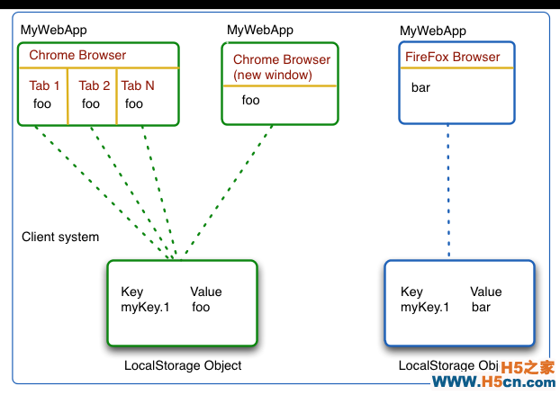
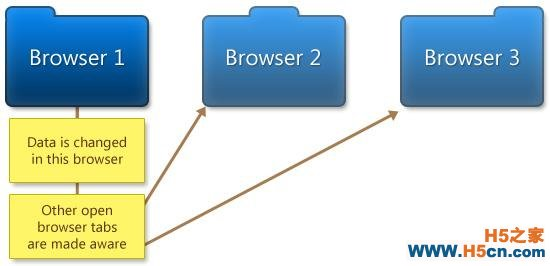

cookie会被发送到服务器端，是有一套规则的，例如域名选择、路径选择和Max-Age选择在RFC2109里找到
每次的http请求，cookie都会包含在包头里发送给服务器，这也是被开发者广为诟病的一个cookie缺点
所以现在很多网站图片等静态资源都会用独立的域名运作，这样就可以单独对这些域名进行cookie设置
安全性问题。cookie在http请求中是明文传递的，除非使用SSL通道，不然是不宜在cookie里放置重要信息
大小问题。每个cookie的大小不能超过4K。每个Domain下cookie个数根据浏览器不同也不同
userData是微软在第一次浏览器大战中的产物，属于DHTML中的一种技术
相比起Cookie，userData在每个域名下可存储达的数据提升了不少，但是具体的大小视domain的安全域而定
userData在数据的本地储存来说，比cookie进步了不少，但是它有个致命的缺点：仅支持IE
Flash Cookies
这个技术允许Flash对象在每个域名上存储100KB的数据
Adobe Flash Player不允许第三方的LSO进行跨域分享。例如，一个的LSO不能被读取
作为本地存储的替代方案，LSO具有了不少优点，但是缺点也是明显，就是它需要安装Flash这个插件
虽然现在Flash的普及率很高，但是这种依赖插件的技术始终不能解决问题的根源，而且为了使用这个方案，我们不得不引入额外的swf和js文件
Gears提供了一个API用来嵌入一个基于SQLite的SQL数据库
在得到用户的允许后，Gears可以在数据库存储没有大小限制的数据
所以，本地存储事实上只是Gears的其中一个功能
一个嵌入式数据库对本地存储的需求来说是绰绰有余了
然而跟Flash一样，Gears只不过是一个插件，还是一个跟Flash的普及率不可相提并论的插件作为一个插件，它对浏览器的支持也是不足够的
目前只有Firefox 2+支持
globalStorage不是一个Storage实例，而是一个包含StorageObsolete实例的StorageList实例
Firefox 2允许访问比当前文档域名层次高的存储的对象，例如在developer.mozilla.org上你可以访问mozilla.org或者org的存储对象
但是由于安全的因素在Firefox 3以上版本中则不再允许，你只能访问当前域名的存储对象
Web Storage被设计出来的目的就是为了提供更大，更安全，更容易使用的存储方式
local storage提供了5MB的存储空间，而sessiong storage甚至没有限制
local storage跟session storage除了在存储空间上不一样外，在生命周期及存储事件等特性上的表现也不一样
类型大小限制生命周期对其他窗口和TAB的可用性支持的数据类型
LocalStorage 每个浏览器的每个应用限制5MB
根据，用户可以根据需要增加这个限制，但是只有少数的浏览器支持
保存在硬盘上直到被用户或者应用删除
共享于运行同一个web应用的浏览器的所有窗口跟标签页
只支持键-值对的字符串
SessionStorage 只受到系统内存的限制
只存活于使用它的窗口或标签页
只能由创建它的窗口或者标签页访问
只支持键-值对的字符串
session storage只是会话级的存储，只有同一个会话的窗口或者标签页能访问它，并且会话结束数据也会同时销毁
local storage是一种持久化的存储，就算关闭浏览器数据依然存在，并且能在多个窗口和标签页间共享数据
每个浏览器上的每个web应用都有自己的一个LocalStorage，大小限制为5MB，并能在所有的这个浏览器上的窗口和标签页间共享
LocalStorage只能存储键值对字符串类型的数据，如果你想保存其他类型的数据，你只能在保存的时候把数据转化为字符串，然后在读取的时候再转化回去
就像cookie一样，LocalStorage和SessionStorage可以被诸如Chrome上的Developer Tools，Sarafi上的Web Inspector等工具检测得到
通过这些工具，用户可以移除保存的数据或者查看访问的网页保存了哪些数据
LocalStorage并不是安全的存储，它保存的数据并不会进行加密，所有不宜保存一些敏感的数据
Web Storage还有个重要特性就是Storage事件
当LocalStorage或者SessionStorage的数据被保存，修改或者删除的时候，当前窗口或者标签页的Storage事件就会触发
触发的Storage事件对象包含了事件发生时的storage对象，URL以及变化前后的键值
需要注意的时候，虽然规范里要求Storage事件在同一个浏览器里能被所有的窗口或者标签页触发，但是只有少数的浏览器实现了这个功能
另外，如果storage被清空了，那么事件不会包含任何被删键值对的信息
getNewValue 返回被修改后的键值
getOldValue 返回被修改前的键值
getStorageArea 返回触发事件的SessionStorage或者LocalStorage对象
getURL 触发当前存储事件的页面的url